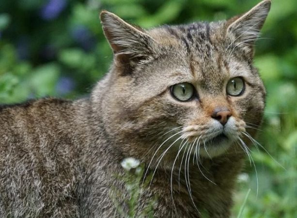

El gato montés (Felis silvestris) es un depredador desconocido que está desapareciendo de forma silenciosa. Esto ocurre en buena parte por su hibridación con el gato doméstico, pero un nuevo estudio sobre la situación de esta especie en siete países europeos, entre ellos España, incide hora en dos causas principales de la muerte de ejemplares: los atropellos (57%) y la caza furtiva (22%). Como destaca Matteo Bastianelli, investigador de la universidad alemana de Friburgo y coordinador de este trabajo que lleva por título Supervivencia y causas específicas de la mortalidad del gato montés europeo (Felis silvestris), el crecimiento de las vías terrestres en el viejo continente —que tiene la densidad más alta del mundo— “interrumpe el flujo y la diversidad genética” de la especie, pues provoca el aislamiento de las diferentes poblaciones de gato montés.
Los investigadores han calculado que por cada kilómetro de carretera construido, la amenaza de muerte para estos animales aumenta nueve veces. Por ello, otro de los autores del estudio, Pablo Ferreras, del Instituto de Investigación en Recursos Cinegéticos (IREC), incide en la necesidad de tener en mente la seguridad de los animales a la hora de diseñar estas infraestructuras, algo que “no supone un coste adicional significativo”.
La presencia del gato montés en tres continentes ―Europa, África y Asia― puede confundir a la hora de analizar su precario estado de conservación, a lo que tampoco ayuda la escasez de información sobre sus poblaciones, su natalidad o las causas de su mortalidad. “Tenemos una década para evitar su desaparición”, asegura María Jesús Palacios González, de la Dirección General de Medio Ambiente de la Junta de Extremadura. El felino está protegido por el Convenio de Berna y por la Directiva Hábitats de la Unión Europea y está incluido en la lista roja de la Unión Internacional para la Conservación de la Naturaleza (UICN). En España figura como una especie de “interés especial”. Sin embargo, los especialistas consideran que sobran los motivos para incorporarlo a la lista de especies catalogadas como vulnerables o en peligro de extinción.